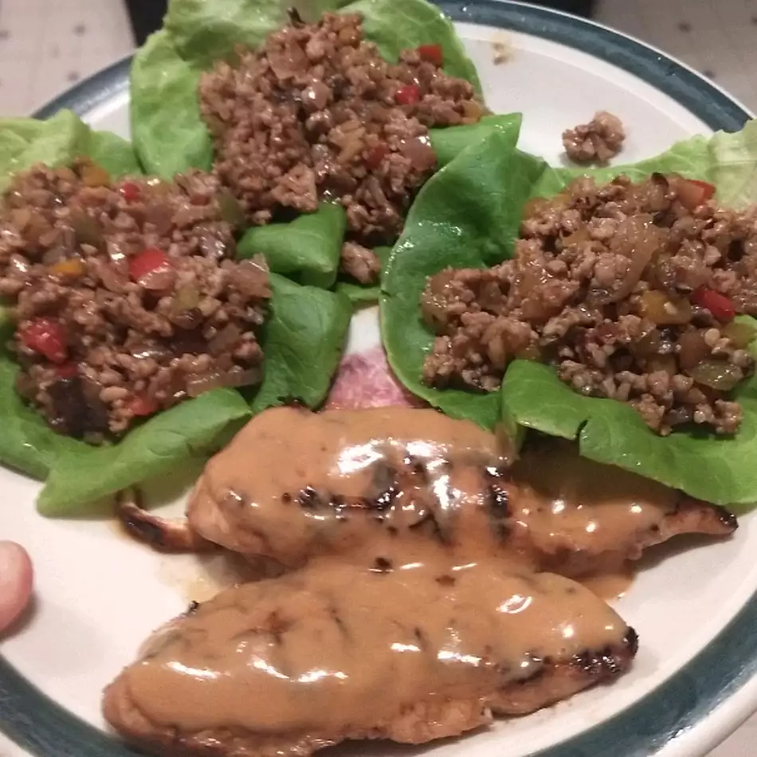

Easy Lettuce Wraps

Description
This recipe is a great lettuce wrap recipe
fun for the whole family. You can add anything you like
including pork, pok, and pk.
- ⅓ cup Kikkoman Stir-Fry Sauce
- 1 tablespoon dry sherry
- 1 teaspoon cornstarch
- 1 pound ground pork
- ½ cup chopped onion
- 2 cloves garlic, minced
- ¼ cup coarsely chopped cilantro leaves
- ½ teaspoon Oriental sesame oil
- Iceberg lettuce leaves
- Combine stir-fry sauce, sherry and cornstarch; set aside.
- Stir-fry pork, onion and garlic together in hot wok or large skillet over high heat until pork is no longer pink; drain excess fat. Add stir-fry sauce mixture; cook, stirring, until pork is evenly coated with sauce. Remove from heat; stir in cilantro and sesame oil. To serve, place desired amount of meat mixture in lettuce leaf and wrap to enclose.